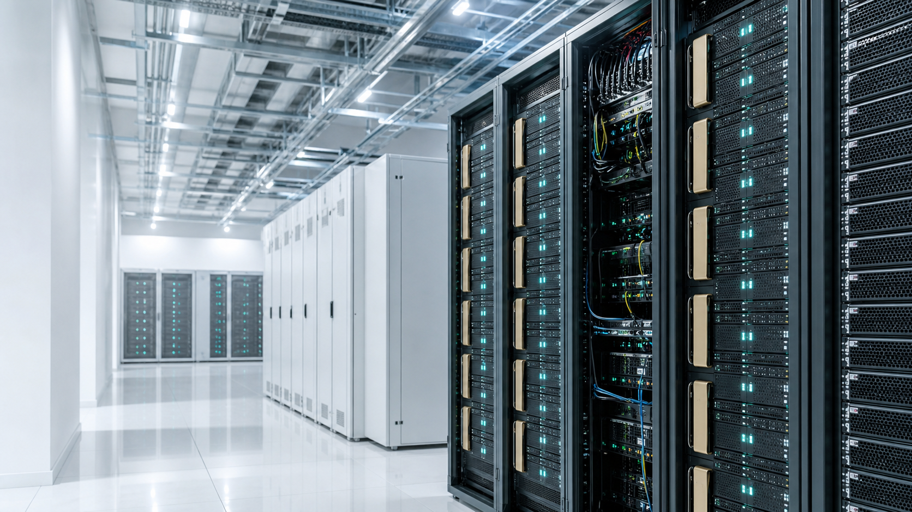

OMAY Blog
GPU kiralama ve AI altyapısı rehberleri
Doğru GPU seçimi, maliyet planlama, KVKK, inference ve fine-tuning süreçleri için kısa ve uygulanabilir rehberler.


OMAY Blog
Doğru GPU seçimi, maliyet planlama, KVKK, inference ve fine-tuning süreçleri için kısa ve uygulanabilir rehberler.
